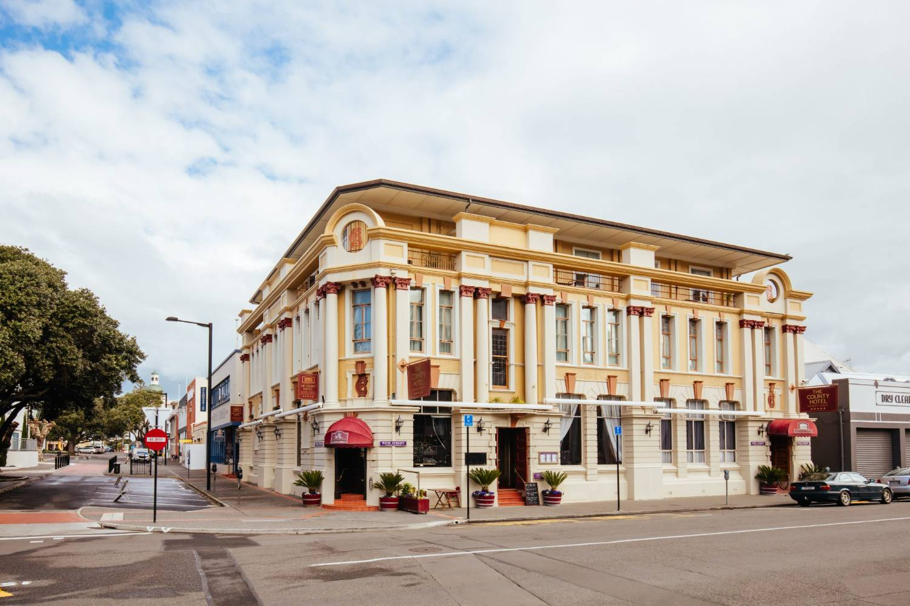
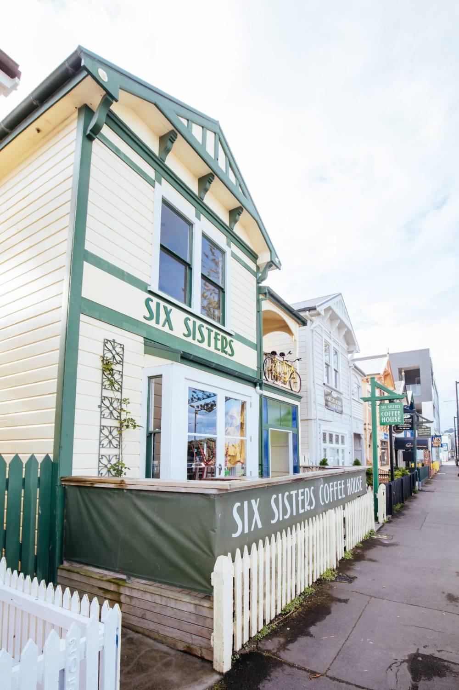
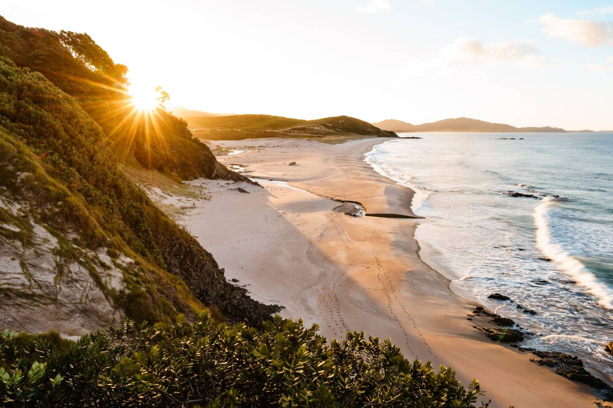

Kia ora, and a warm welcome to Aotearoa
Moving to the other side of the world is a big step — and choosing Hawke’s Bay means arriving somewhere that truly knows how to live well. On the North Island’s sunny east coast, it’s New Zealand’s celebrated food and wine country, with the Art Deco city of Napier and historic Hastings at its heart.
You won’t be doing this alone. New Zealanders are known for their warmth and manaakitanga — hospitality and care for others — and Hawke’s Bay’s relaxed, family-friendly communities make it an easy place to settle. Napier and Hastings sit twenty minutes apart, with beaches, vineyards and Te Mata Peak all close by.
This guide is written to make your move smooth and unhurried — from the health system, IRD numbers and KiwiSaver to the towns, the school zones and where to spend your first free weekend. Think of it as the conversation we’d have over a flat white, in your pocket for whenever you need it.
Nau mai, haere mai ki Aotearoa — welcome to New Zealand. We can’t wait to see you settle in.

"Hawke’s Bay is a region that knows how to live well — food, wine and sunshine, at a pace you can enjoy."
Ngā mihi nui,
Sophie
Sophie Careem · Founder & Director, Ethicare Resourcing
Hawke’s Bay rewards people who want warmth, space and a slower pace without giving up good food, wine and coast. Your budget stretches further than in Auckland or Wellington, and most of everyday life — the beach, the trails, the markets — is right on the doorstep.
- 01Welcome & OverviewHistory, culture, transport & climate
- 02HealthcareThe system, GPs, pharmacies, urgent care
- 03Banking & FinanceAccounts, IRD, KiwiSaver, getting paid
- 04Cost of LivingPrices, an example budget & Sophie’s insights
- 05Housing & AreasRenting and a guide to the towns
- 06Shopping & FoodTowns, supermarkets, world food, worship
- 07Recreation & TravelWine trails, peaks, gannets & beaches
- 08Education & FamilySchooling, zoning, childcare & family life
- 09Practical InfoChecklists, emergencies, community & phrases
Decide between Napier and Hastings early — they’re only twenty minutes apart, but each has its own feel. Napier leans coastal and Art Deco; Hastings and Havelock North sit closer to the vineyards and Te Mata Peak.
Sunshine, food and wine
Te Matau-a-Māui — the fish-hook of Māui — is one of New Zealand’s warmest, sunniest regions, a place of vineyards and orchards, twin cities twenty minutes apart, and a coast that faces the morning sun.
Go deeperIs New Zealand right for you and your family?→Art Deco heritage, a modern food scene
After the 1931 earthquake, Napier was rebuilt almost entirely in the Art Deco style of the day — and today the whole city is a living monument to it, celebrated each February at the Art Deco Festival.
The region is the rohe of Ngāti Kahungunu, one of the country’s largest iwi, and that heritage runs deep alongside the wine estates, orchards and farmers’ markets that define daily life. Hastings and Havelock North add their own character, closer to the vines and Te Mata Peak.
It all adds up to a region that genuinely knows how to live well — good food, good wine and long sunny days — at a pace that leaves room to enjoy them.

Getting around
Hawke’s Bay is compact and easy. Napier and Hastings sit about twenty minutes apart, the roads are open, and the flat coastal plains make it one of the best places in the country to get around by bike.

Driving
Short, uncongested commutes between Napier, Hastings and the surrounding towns. New Zealanders drive on the left.
Cycling
The flat Hawke’s Bay Trails link the cities, coast and wineries — many people commute and explore by bike.
Air
Napier Airport connects daily to Auckland, Wellington and Christchurch.
Buses
The goBay network runs between the main centres and suburbs for everyday travel.
A warm, dry, sunny climate
Hawke’s Bay enjoys one of New Zealand’s warmest, driest climates: long sunny summers made for the beach and the vines, and mild winters that rarely turn harsh. It’s the sunshine, more than anything, that people fall for.

Summers are hot and dry, ideal for the beach and the vines, while winters stay mild with crisp, clear days. It’s a climate built for an outdoor, easy-going life — pack for the sun first.
Regional healthcare, room to grow
Public hospital and specialist services across the region are delivered by Health New Zealand | Te Whatu Ora, serving both cities and the wider rural bay — the kind of connected, community-scale healthcare where your work is visible and valued.
Go deeperUnderstanding the New Zealand health system→Hawke’s Bay Hospital
The region’s main public hospital, in Hastings, providing acute, surgical, maternity and specialist services within Health New Zealand | Te Whatu Ora.
Napier & community care
Napier Health Centre and community teams provide outpatient, urgent and community services across the twin cities.
Rural & Māori health
Rural clinics and kaupapa Māori providers reach Wairoa, Central Hawke’s Bay and the wider region.
A private option
Private hospital and specialist services in the region offer elective procedures and shorter waits alongside the public system.
GPs, pharmacies & urgent care
Registering with a GP & dentist
Once you settle in, enrol with a local GP. Enrolment means subsidised visits — typically around NZ$50–$70, more as a casual patient. Many practices allow online enrolment once you have an address. Dental care is private (roughly NZ$90–$150 for a check-up).
Pharmacies
Pharmacies are found throughout Napier, Hastings and the towns. Prescriptions are partly subsidised once you’re enrolled with a GP — commonly a small standard charge per item.
Setting up your finances
Getting your finances in order early makes day-to-day life much easier. Most of this can be started before you arrive.
Go deeperSalary & pay in New Zealand healthcare→Opening a bank account
The major banks are ANZ, ASB, BNZ, Kiwibank and Westpac. You’ll usually need your passport, work or resident visa, and proof of a NZ address. Many banks let you start online before arrival, then activate in person — ask for online banking and a debit card at the same time.
Tax — your IRD number
Every worker needs an IRD number from Inland Revenue. Apply online once you have a NZ address and bank account; it usually takes around 7–10 working days. Give the number to payroll as soon as it arrives so the correct tax is applied. Wages are commonly paid fortnightly.
Start your bank account application before you fly. Having an account number ready makes your IRD application and payroll setup far smoother in those hectic first weeks.
KiwiSaver & sending money home
KiwiSaver is a government-supported retirement savings scheme. On a work visa you can usually opt in or out. Contributions are a percentage of your pay (commonly 3%, 4%, 6%, 8% or 10%), with employers contributing at least 3%. You can withdraw your funds if you permanently leave New Zealand.
Sending money overseas: banks can transfer internationally, but specialist services such as Wise or OFX are often cheaper and faster. Always compare the exchange rate and the fees before moving larger amounts.
Room to breathe, and to buy
Compared with Auckland or Wellington, Hawke’s Bay offers noticeably more space and value for your money — a warm coastal lifestyle without a big-city price tag.
Everyday item · approx. price (NZ$)
| 1 litre of milk | $2.50 – $3.50 |
|---|---|
| Loaf of bread | $2.50 – $4.00 |
| Dozen eggs | $7 – $10 |
| Flat white coffee | $5.50 – $6.50 |
| Mid-range meal for one | $25 – $40 |
| Local bottle of wine | $18 – $30 |
| Home broadband | $75 – $100 / mo |
Example monthly budget · one person (NZ$)
| Rent (room / small 1-bed) | $1,200 – $1,900 |
|---|---|
| Power & water | $150 – $220 |
| Internet | $75 – $100 |
| Petrol / bus & bike | $120 – $260 |
| Groceries | $400 – $600 |
| Mobile phone plan | $30 – $50 |
| Entertainment & leisure | $180 – $350 |
| Estimated total | $2,150 – $3,480 |
Prices are indicative and change over time — use the calculators at the back of this guide for a personalised estimate.
"Hawke’s Bay wins people over with its food, its wine and its sunshine — weekends spent cycling between wineries and markets, with the beach never far away."
It’s a region that knows how to live well, at a price that lets you actually enjoy it — a favourite for families wanting space, warmth and a genuine sense of community. Your money simply goes further here than in the big centres.
Sophie Careem · Founder & Director, Ethicare Resourcing
Finding a place to live
Hawke’s Bay offers everything from Art Deco apartments and character villas in Napier to family homes with gardens in Hastings and leafy Havelock North. Where you live shapes your commute — though few here are long — and, if you have children, the school zone before you sign.

Most rentals are advertised online and move quickly in the popular suburbs. The main sites are trademe.co.nz/property (NZ’s largest rental marketplace) and realestate.co.nz (nationwide rentals and homes for sale). Many people rent for a few months first to get to know the towns before committing.
A guide to the areas
Napier city, Ahuriri & Marewa
Art Deco streets, the marina at Ahuriri and Marewa’s 1930s homes — coastal, characterful and close to Marine Parade.
Bluff Hill & Taradale
Elevated Bluff Hill views and leafy, family-friendly Taradale near the EIT campus.
Havelock North
Leafy, sought-after village at the foot of Te Mata Peak, surrounded by vineyards — a favourite with families.
Hastings
The region’s other city, with good value, a growing centre and quick access to the orchards and vines.
The coast · Te Awanga & Haumoana
Relaxed seaside settlements south of Napier, popular for beach living within an easy commute.
Central Hawke’s Bay
Waipukurau and Waipawa offer small-town value and space, a short drive south of the cities.
Because commutes are short, you can choose on lifestyle rather than proximity to work. If you have children, some popular schools are zoned, so check the exact address is in-zone before you sign.
Utilities, rates & rubbish
Power & gas
Choose from providers like Genesis, Mercury, Meridian and Contact. Compare rates on Powerswitch (powerswitch.org.nz).
Water & rates
Council rates fund local services; if you rent, rates are usually included in your rent.
Rubbish & recycling
Kerbside collection is run by the councils, with separate bins for rubbish, recycling and glass.
Internet
Most homes have fibre broadband; Spark, One NZ and 2degrees are the main providers.
Where to shop
Shopping spans the two cities’ centres, a big mall and — the region’s real strength — some of the country’s best growers’ markets. A few of the main ones:
Napier city & Marine Parade
Art Deco shopping streets, seafront cafés and boutiques along the palm-lined Marine Parade.
Hastings & The Park (Megastore)
Hastings’ revitalised centre plus the region’s big-box retail and supermarkets.
Havelock North village
A leafy village centre of cafés, delis, boutiques and specialty food, under Te Mata Peak.
Farmers’ markets
The Hawke’s Bay and Hastings farmers’ markets are weekend institutions — produce, wine and food from the source.
Supermarkets & groceries
New Zealand’s supermarkets fall into a few main groups — knowing the difference helps you balance budget and convenience.
| Pak’nSave | The cheapest of the big chains — a no-frills, bulk-buy warehouse format. Best for budget shopping. |
|---|---|
| Woolworths | Mid-range and widespread, with strong online shopping and delivery (formerly Countdown). |
| New World | More upmarket, with a wider fresh and specialty range. |
| Four Square & FreshChoice | Smaller neighbourhood stores for convenience and top-ups. |
Napier and Hastings have Pak’nSave, Woolworths and New World. As one of the country’s great growing regions, Hawke’s Bay also has superb orchard stalls and markets for fruit, veg and wine. Bring your own bags — single-use plastic bags are banned.
A taste of home
Halal & South Asian. Napier and Hastings have Indian and Asian grocers and a Muslim community with a mosque; many supermarket lines are halal-processed — check the label.
Asian. Chinese, Filipino and South-East Asian stores and eateries serve the region’s growing communities.
British & European. The larger supermarkets and specialty importers stock familiar brands from home.
Hawke’s Bay has welcoming communities across many faiths — Christian churches of many denominations, a mosque in the region, and Hindu and Buddhist groups. Most list service times online, and many are among the quickest ways to build a support network when you arrive.
Food, wine and the great outdoors
Hawke’s Bay blends easy indulgence with an active outdoor life: cycle the wine trails, climb Te Mata Peak, meet the gannets at Cape Kidnappers, and end the day by the sea.
Go deeperLiving & thriving in New Zealand→
Eight things not to miss
Weekend trips from the bay
Taupō · ~2 hrs
New Zealand’s largest lake, trout fishing and the volcanoes beyond.
Wairoa & Māhia · ~1.5 hrs
The remote Māhia Peninsula’s beaches and the northern bay.
Gisborne · ~3 hrs
Surf beaches and more wine country on the East Coast.
Wellington · ~4 hrs
The capital’s culture, or a quick flight from Napier Airport.
Schooling & study
Napier and Hastings offer a full range of early childhood education, schools and tertiary study. The school year runs late January to mid-December, in four terms with two-week breaks in April, July and October.
Go deeperEducation & schools in New Zealand→Early Childhood (ECE)
Kindergartens, daycare, Montessori, kōhanga reo and home-based care for ages 0–5. Government 20-hours funding applies for ages 3–5.
Primary & intermediate
State, state-integrated and private schools for Years 1–8 across the twin cities and towns.
Secondary
Years 9–13, working towards NCEA, the national qualification, with several long-established colleges.
Tertiary
EIT (the Eastern Institute of Technology) in Taradale offers vocational and degree study locally.
School zones come first
In New Zealand, where you live can determine which state school your children attend. For many families, the school decision leads the choice of where to rent or buy.
In-zone = guaranteed
Children living inside a school’s enrolment zone are guaranteed a place.
Out-of-zone = ballot
You can still apply, but popular schools run a ballot for limited spots.
Check the address
Zones can be specific — confirm the exact address is in-zone.
The order that works best: shortlist schools you like → check each school’s zone map → search for rentals inside that zone → confirm the address is in-zone before you sign.
Beyond school and work, Hawke’s Bay is a warm, safe, outdoorsy place to raise a family — beaches and parks close by, the flat bike trails, and much of the best fun free. Short commutes give you more time at home, and an established, welcoming community makes settling easy. Children often settle fastest through school, sport and local clubs.
Pre-departure checklist
Work through these before you fly. Keep digital and printed copies of everything important.
Go deeperUseful contacts & the people we trust→Documents
Money & travel
Your first weeks
Emergency & health
Mental health — call/text 1737 · Police (non-urgent) 105
Everyday services
AA roadside 0800 500 222
Community & expat groups
One of the quickest ways to settle in is to find your people. Search Facebook groups like "Napier / Hastings Community", your home-country community and local parents’ groups; Meetup and local clubs list cycling, hobby and newcomer groups; and sports and cultural clubs all welcome newcomers.
New Zealand is welcoming and progressive — marriage equality has been law since 2013, with strong protections against discrimination. OutLine Aotearoa offers rainbow support on 0800 688 5463.
Everyday te reo & Kiwi phrases
We guide you through every stage
Relocating to Hawke’s Bay can feel like a lot to hold at once. From the first conversation to long after you land, we’re here to support you — the same six-step journey you’ll find on our website.
Discovery call
Understanding your goals, your family situation and whether New Zealand is the right fit.
Eligibility & registration
Assessing your registration requirements and helping you understand your options clearly.
Opportunities & interviews
Discussing roles and locations, then preparing you for interviews and what employers look for.
Offer & decision support
Helping you evaluate opportunities and make the decision that’s right for you.
Visa & relocation guidance
Supporting you through the practicalities of moving to New Zealand.
Settling in
Ongoing support as you begin your new life and career in Hawke’s Bay, long after you arrive.
Work out your cost of living
Thank you for taking the time to read this guide.
Moving to the other side of the world is one of the biggest decisions you’ll ever make, and there’s a lot to take in — so please don’t feel you have to have it all figured out at once. My hope is that this guide has made Hawke’s Bay feel a little more familiar, and the move ahead a little less daunting.
Whatever stage you’re at, we’re always happy to talk anything through — the big decisions or the small worries. Whether you choose to work with Ethicare or not, I wish you every success in your new adventure.
Ngā mihi nui,
Sophie
Sophie Careem · Founder & Director, Ethicare Resourcing